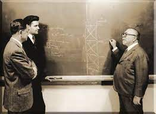

A Brief Bio of Norbert Wiener
Norbert Wiener, (born Nov. 26, 1894, Columbia, Mo., U.S.—died March 18, 1964, Stockholm, Swed.), American mathematician who established the science of cybernetics. He attained international renown by formulating some of the most important contributions to mathematics in the 20th century.
Wiener, a child prodigy whose education was controlled by his father, a professor of Slavonic languages and literature at Harvard University, graduated in mathematics from Tufts College (now Tufts University, Medford, Massachusetts) in 1909 at the age of 14. He spent a year at Harvard as a graduate student in zoology but left after he found that he was inept at laboratory work. At his father’s suggestion, he began to study philosophy, and he completed a Ph.D. at Harvard in 1913 with a dissertation on mathematical logic.
On a grant from Harvard, Wiener went first to England, to study mathematical logic at the University of Cambridge under Bertrand Russell, and then to the University of Göttingen in Germany, to study with David Hilbert. On the advice of Russell, he also began a serious study of general mathematics, in which he was strongly influenced by Russell, by the English pure mathematician Godfrey Hardy, and to a lesser extent by Hilbert. He published his first paper in the mathematical journal Messenger of Mathematics in 1913 at Cambridge.
When World War I broke out, he tried to enlist but was rejected because of poor eyesight. For five years he tried a variety of occupations. He was a teacher at the University of Maine, a writer for an encyclopaedia, an apprentice engineer, a journalist of sorts, and a mathematician at the Aberdeen (Maryland) Proving Grounds. Finally, in 1919, he was hired as an instructor by the mathematics department at the Massachusetts Institute of Technology (MIT), a department with no real tradition of scholarship or research at that time. It turned out, however, to have been the right move for Wiener, for he had entered upon an extremely productive period, just as MIT itself was beginning to develop into a great centre of learning in science and technology. Wiener remained on the MIT faculty until his retirement.